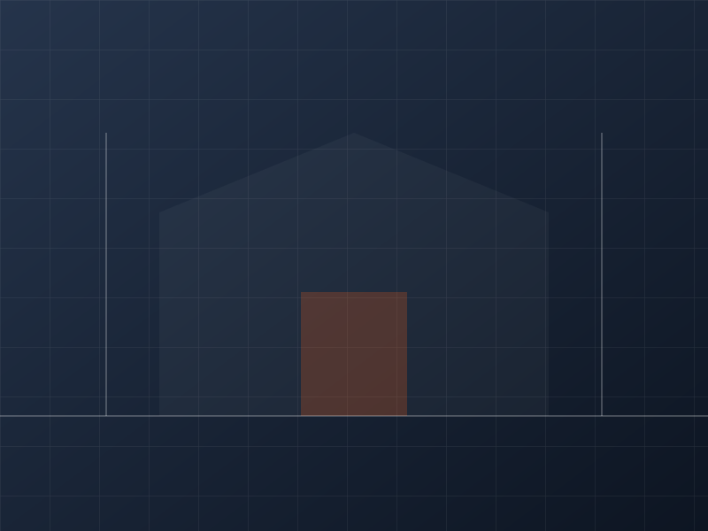

Auswahl & Montage
Gestänge oder Gleitschiene, Kopf- oder Bandseitenmontage, Größe nach EN 1154 – passend zur Tür statt nach Katalog.
Obentürschließer
Schlägt eine Tür, klemmt sie oder fällt sie nicht ins Schloss, liegt es fast immer am Schließer oder an seiner Einstellung. Beides bekommen wir in den Griff.
Ein Obentürschließer muss zur Türgröße, zum Gewicht und zur Einbausituation passen. Ist er zu schwach, schließt die Tür nicht sicher; ist er zu stark, kommen Kinder, ältere Menschen und Rollstuhlfahrende nicht mehr durch. Beides ist bei Brandschutz- und Rettungswegtüren ein Mangel.
Wir prüfen Größe, Montageart und Einstellung, tauschen verschlissene Modelle und richten Gleitschienen so ein, dass die Tür ruhig, dicht und normgerecht schließt.

Im Detail
Gestänge oder Gleitschiene, Kopf- oder Bandseitenmontage, Größe nach EN 1154 – passend zur Tür statt nach Katalog.
Schließkraft, Schließgeschwindigkeit, Endschlag und Öffnungsdämpfung fein justiert. Barrierefrei heißt: geringe Bedienkraft bei sicherem Schließen.
Bei zweiflügeligen Türen sorgt der Regler dafür, dass Standflügel und Gangflügel in der richtigen Reihenfolge schließen – Voraussetzung für Rauchdichtigkeit.
Normen
Schildern Sie uns kurz Fabrikat und Standort – wir melden uns in der Regel am selben Werktag mit einer Einschätzung.